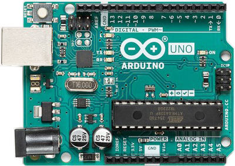
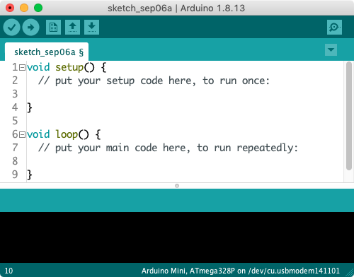

{%- import 'app/controllers/macros/layouts.njk' as layouts -%}
<!DOCTYPE html>
<html lang="en">
  {{ layouts.head('Arduino Labs | Computing Sciences Dept | University of Hartford', 'Using a hands-on approach, the Arduino labs on this site introduce students to various concepts in computer science at a micro level.')
  }}
<body>
{% include 'app/controllers/blocks/ie_version_warning.njk' %}
{% include 'app/controllers/blocks/header.njk' %}
{{ layouts.nav('home', links) }}
  <main>
    <div class="container">
      <p>This is the website for the labs used in <em>all</em> sections of <span class="small-caps"><abbr title="Computer Science">cs</abbr></span> 110 by The Dept of Computing Sciences at The University of Hartford. We use the Arduino platform in our labs for its low cost, ease of use, and <a href="https://www.arduino.cc/en/Main/Products">various form factors</a>.</p>

      <h2>What is Arduino?</h2>
      <p>The term “Arduino” refers to a platform consisting of hardware and software. Each is explained below.</p>

      <h3>Hardware</h3>
      <div class="figure-container">
        <p>The Arduino hardware (see Figure 1) consists of a board containing various electrical components, including a microcomputer, a <span class="small-caps"><abbr title="Universal Serial Bus">usb</abbr></span> connector for interfacing with a computer, and various input and output pins for connecting lights, motors, speakers, and many different ambient-embracing sensors. It’s portable, measuring about 75mm&times;54mm (2.9"&times;2.1"), and consumes little power, running on either computer power (via <span class="small-caps"><abbr title="Universal Serial Bus">usb</abbr></span>) or a battery. When referring to the Arduino hardware, we usually just say, “The Arduino board.”</p>
        <figure>
          
          <figcaption><span>Figure 1.</span> The Arduino Uno board</figcaption>
        </figure>
      </div>

      <h3>Software</h3>
      <div class="figure-container">
        <p>The Arduino software (see Figure 2) consists of a programming language and a graphical user interface, or <span class="small-caps"><abbr title="Graphical User Interface">gui</abbr></span>, used to program the board. Designed for non-engineers, the Arduino programming language is concise and easy to use. Users benefit from forums, Stack Overflow, and tutorials contributed by a community that helps each other worldwide. Arduino is reprogrammable and <a href="https://en.wikipedia.org/wiki/Open_source" target="_blank" rel="noopener">open-source</a>. Thus, it’s freely available to anyone.</p>
        <figure>
          
          <figcaption><span>Figure 2.</span> The Arduino integrated development environment, or <span class="small-caps"><abbr title="Integrated Development Environment">ide</abbr></span></figcaption>
        </figure>
      </div>

      <h3>Resources</h3>
      <ul>
        <li>A good introduction to the Arduino by the people at Make: is available <a href="https://www.youtube.com/watch?v=CqrQmQqpHXc">here</a>.</li>
        <li>Massimo Banzi — one of Arduino’s founders — presents some of the projects created with Arduino in <a href="https://www.youtube.com/watch?v=UoBUXOOdLXY">this 2012 <span class="small-caps"><abbr title="Technology, Education, Design">ted</abbr></span> talk</a>.</li>
        <li>A superb simulator, or simply sim, is available from Autodesk’s <a href="https://www.tinkercad.com/learn/circuits">Tinkercad</a>.</li>
      </ul>
    </div>
  </main>
{% include 'app/controllers/blocks/footer.njk' %}
</body>
</html>
